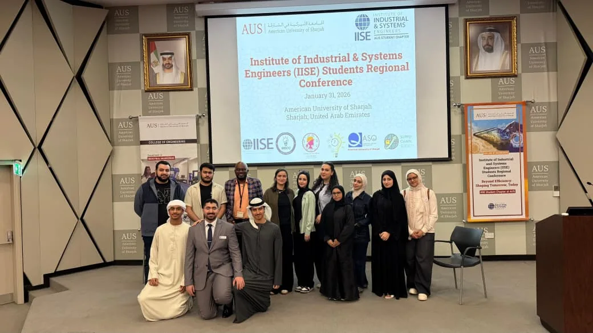

Learn by doing
Try tools, tackle challenges, and connect what you study to what happens in the real world.
IISE CHAPTER 671 · ABU DHABI, UAE
A better way to move through university.
Build real skills, meet your people, and make things happen with IISE at Khalifa University.
Engineering Systems & Management.
A whole world beyond the classroom.

GET TO KNOW US
We’re the Institute of Industrial and Systems Engineers student chapter at Khalifa University.
Our chapter brings the ESMA community together through workshops, industry connections, competitions, and the kind of conversations that start with “what if?”
Come for a skill. Stay for the people. Help us make the next great chapter moment.
Meet IISE on KU’s club directory ↗Try tools, tackle challenges, and connect what you study to what happens in the real world.
Meet students, learn from alumni, and get closer to the people shaping our profession.
Pitch an idea, help run an event, or bring your creative energy to a chapter team.
ON THE RADAR / 2026
The next hello could be a good one.
Follow our channels for the latest details.
Meet the team, discover IISE, and find your way into the community. Come say hello, even if you’re just curious.
Khalifa University · Time and booth location to be announced on Instagram.
Get the fair details ↗The 53rd International Conference on Computers and Industrial Engineering brings the wider profession to Abu Dhabi.
KU Main Campus · Chapter participation details will be shared separately.
Official conference details ↗A CHAPTER IN MOTION
A look back at 2025–2026.
Real experiences, real people, our chapter.
Taking the chapter beyond campus at the AUS Conference, with opportunities to listen, connect, and see the profession in action.
Our intro workshop explored Engineering Systems and Management, the skills behind it, and where it can take you.
The Odoo workshop brought business software into the conversation about how organizations work.
Carbon Literacy training connected learning with the sustainability challenges facing our communities.
Club Fair is our chance to meet new faces, share what IISE is about, and invite everyone into the conversation.
OUR CHAPTER IN PICTURES
Explore our event photographs and visual guides.
Open a photo and use the arrows to keep browsing.
Chapter event collection · 2025–2026 · Photo 1
Chapter event collection · 2025–2026 · Photo 2
Chapter event collection · 2025–2026 · Photo 3
Chapter event collection · 2025–2026 · Photo 4
Chapter event collection · 2025–2026 · Photo 5
Chapter event collection · 2025–2026 · Photo 6
Chapter event collection · 2025–2026 · Photo 7
Chapter event collection · 2025–2026 · Photo 8
Chapter event collection · 2025–2026 · Photo 9
Chapter event collection · 2025–2026 · Photo 10
Chapter event collection · 2025–2026 · Photo 11
Chapter event collection · 2025–2026 · Photo 12
Chapter event collection · 2025–2026 · Photo 13
Chapter event collection · 2025–2026 · Photo 14
Chapter event collection · 2025–2026 · Photo 15
Chapter event collection · 2025–2026 · Photo 16
Chapter event collection · 2025–2026 · Photo 17
Chapter event collection · 2025–2026 · Photo 18
Chapter event collection · 2025–2026 · Photo 19
Chapter event collection · 2025–2026 · Photo 20
Chapter event collection · 2025–2026 · Photo 21
Chapter event collection · 2025–2026 · Photo 22
Chapter event collection · 2025–2026 · Photo 23
Chapter event collection · 2025–2026 · Photo 24
Chapter event collection · 2025–2026 · Photo 25
Chapter event collection · 2025–2026 · Photo 26
Chapter event collection · 2025–2026 · Photo 27
Chapter event collection · 2025–2026 · Photo 28
Chapter event collection · 2025–2026 · Photo 29
Chapter event collection · 2025–2026 · Photo 30
Chapter event collection · 2025–2026 · Photo 31
Chapter event collection · 2025–2026 · Photo 32
Chapter event collection · 2025–2026 · Photo 33
Chapter event collection · 2025–2026 · Photo 34
Chapter event collection · 2025–2026 · Photo 35
Chapter event collection · 2025–2026 · Photo 36
Chapter event collection · 2025–2026 · Photo 37
Chapter event collection · 2025–2026 · Photo 38
Chapter event collection · 2025–2026 · Photo 39
Chapter event collection · 2025–2026 · Photo 40
Chapter event collection · 2025–2026 · Photo 41
Chapter event collection · 2025–2026 · Photo 42
Chapter event collection · 2025–2026 · Photo 43
Chapter event collection · 2025–2026 · Photo 44
Chapter event collection · 2025–2026 · Photo 45
Chapter event collection · 2025–2026 · Photo 46
Chapter event collection · 2025–2026 · Photo 47
Chapter event collection · 2025–2026 · Photo 48
Chapter event collection · 2025–2026 · Photo 49
Chapter event collection · 2025–2026 · Photo 50
Chapter event collection · 2025–2026 · Photo 51
Chapter event collection · 2025–2026 · Photo 52
Chapter event collection · 2025–2026 · Photo 53
Chapter event collection · 2025–2026 · Photo 54
Chapter event collection · 2025–2026 · Photo 55
Chapter event collection · 2025–2026 · Photo 56
Chapter event collection · 2025–2026 · Photo 57
Chapter event collection · 2025–2026 · Photo 58
Chapter event collection · 2025–2026 · Photo 59
IISE Intro Workshop · 2025–2026 · Photo 60
AUS Conference 2026 · 2025–2026 · Photo 61
AUS Conference 2026 · 2025–2026 · Photo 62
AUS Conference 2026 · 2025–2026 · Photo 63
AUS Conference 2026 · 2025–2026 · Photo 64
Carbon Literacy Training · 2025–2026 · Photo 65
Club Fair · 2025–2026 · Photo 66
Club Fair · 2025–2026 · Photo 67
Club Fair · 2025–2026 · Photo 68
ESMA visual topic guide · Photo 69
ESMA visual topic guide · Photo 70
ESMA visual topic guide · Photo 71
ESMA visual topic guide · Photo 72
ESMA visual topic guide · Photo 73
ESMA visual topic guide · Photo 74
ESMA visual topic guide · Photo 75
ESMA visual topic guide · Photo 76
ESMA visual topic guide · Photo 77
ESMA visual topic guide · Photo 78
ESMA visual topic guide · Photo 79
ESMA visual topic guide · Photo 80
ESMA visual topic guide · Photo 81
IISE KU × KNDL Club Fair poster
ESMA keychain design
A LITTLE CHAPTER PRIDE
CONNECT THE DOTS
Engineering Systems & Management.
A way to see how everything works together.
People. Data. Decisions.
Better ways of doing things.
Think shorter queues, smarter supply chains, safer workplaces, and better use of resources. ESMA brings engineering, analytics, and management together to improve systems.
At KU, the program sits within the Department of Management Science and Engineering. IISE is a place to explore those ideas with other students.
Use the catalog for your admission year and your academic advisor’s guidance when planning courses.
Orders take 1 minute. Making each drink takes 3 minutes. One person handles each station. Where would you add a helper?
A simplified example: independent drink preparation, enough equipment, and steady demand.
THE ESMA FIELD GUIDE
Explore the chapter’s visual topic guides.
Tap a card to read it in full.
STUDENT LED, TOGETHER
Our 2026–2027 chapter leads.
A shared effort, with room for your ideas.
President
Vice President
Vice President
Media Chair
Events Chair
Treasurer Lead
Communications Director
There’s more than one way to contribute. ↗
WHY JOIN IISE KU?
Whether you are a freshman or approaching graduation, your ideas and participation have a place here.
Explore how data, processes, and people connect through workshops and collaborative challenges that complement your studies.
Engage with fellow students, alumni, and industry professionals. Ask questions about career paths and learn from their experiences.
Help organize an event, create chapter content, or support a budget. Build teamwork and project experience through a real contribution.
Exchange ideas, meet people across year groups, and help shape activities that make university life more connected and rewarding.
YOUR NEXT CHAPTER
Freshmen and students from every year are encouraged to apply. Join Events, Media, or Treasury, or contribute as an Officer with a more flexible commitment. Bring your ideas and learn as you participate.
Apply for a chapter role ↗Choose your preferred role in the chapter’s Google Form.Interested in IISE? Our general chat is open to KU students who want to hear about events, ask questions, and connect with the chapter. No chapter role is required.
Open KU Groups Manager on Telegram, follow the bot’s access instructions, and look for the IISE General Group Chat.
Open KU Groups Manager ↗Opens KU Groups Manager on Telegram.IDEAS / QUESTIONS
A workshop you would like to attend? A collaboration worth exploring? A question about the chapter? We would like to hear it.
Share an idea or question ↗Opens the chapter’s Google Form.
You do not need prior chapter experience. If you are willing to participate and learn, apply to Events, Media, Treasury, or an Officer role. Tell us what interests you and what you would like to contribute.
Apply through the chapter signup form for Events, Media, Treasury, or an Officer role. Officers contribute with more flexibility as their availability allows. To stay connected without taking on a role, find the IISE General Group Chat through KU Groups Manager on Telegram and follow the bot’s access instructions.
Apply to a team! We encourage freshmen to participate from the start. You do not need to have everything figured out before contributing. If your schedule feels pressured, joining as an Officer offers a more flexible way to stay involved.
Check our Instagram and chapter groups for the latest announcements, locations, and registration details. LinkedIn is where you can follow chapter news and professional highlights.
Yes. Use our Ideas / Questions form to suggest an activity, propose a collaboration, or ask a question. Students, alumni, and potential collaborators are welcome to contribute.
KU sends out an IISE student membership renewal each academic year. Watch for the university’s announcement and follow its instructions and deadlines. Applying to a chapter team or joining a group does not replace that annual renewal process. For wider membership information, visit IISE’s website.